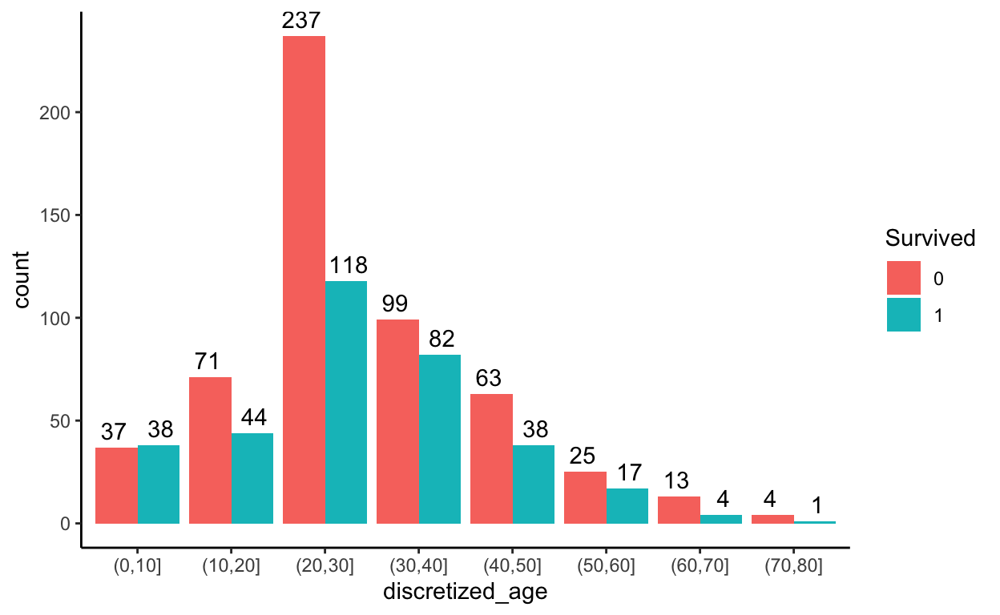

Relevance to Data Analytics Skills
- Using RMarkdown
- Formatting tables with gt package
- Using R code
- Data wrangling
- Dealing with missing values
- Imputation
KDnuggets has this to say about projects ideas not to include in a data science portfolio.
It’s suggested not to have common projects in your portfolio. You need to stay away from the most common project ideas when building a portfolio. Try to come up with something that will truly set you apart from the others.
Here are a few most common projects that can hurt you if you include them in your data science portfolio:
- Survival classification on the Titanic dataset.
- Digit classification on the MNIST dataset.
- Flower species classification using the iris dataset.
These are the most common projects that can hurt you more than they help you. You can’t find ways to distinguish yourself from others using these datasets. You have to make sure to list novel projects to stand out from the rest.
Well, I am not so sure about that although I accept the point that is being made. The Titanic dataset is so ubiquitous in tutorials for data exploration and, later on, for developing an understanding of the principles of machine learning, it seems that for sure, everybody in data science has seen it or at least heard about it, and has probably cut their data analytics teeth on it themselves. Nevertheless, it is such a rich resource for learning that I felt compelled to include it in my blog, as a multipart series. I hope you find it interesting and if you’ve seen it all before, my apologies.
Preamble
Information drawn from Kaggle :
The sinking of the Titanic is one of the most infamous shipwrecks in history.
On April 15, 1912, during her maiden voyage, the widely considered “unsinkable” RMS Titanic sank after colliding with an iceberg. Unfortunately, there were not enough lifeboats for everyone onboard, resulting in the death of 1502 out of 2224 passengers and crew.
While there was some element of luck involved in surviving, it seems some groups of people were more likely to survive than others.
In Kaggle’s Titanic Machine Learning Competition, participants are asked to build a predictive model that answers the question: “what sorts of people were more likely to survive?” using passenger data (i.e., name, age, gender socio-economic class, etc.). Participants gain access to two similar datasets that include the passenger information. One dataset is titled “train.csv” and the other is titled test.csv”. The “train.csv” dataset contains details of a subset of 891 passengers on board and importantly, reveals whether they survived or not, also known as the “ground truth”. The “test.csv” dataset contains similar information but does not disclose the “ground truth” for each passenger. Using the patterns found in the train.csv data, participants seek to predict whether the other subset of 418 passengers on board, found in test.csv, survived.
In this blog post I do some data exploration of the train.csv dataset.
To the project…
First thing to do is load the data and take a preliminary look at it. Step 1, load the required R packages.
Step 2, load the data.
There are various functions from various packages that help us get to know the data. The first one I like to use is glimpse().
Rows: 891
Columns: 12
$ PassengerId <dbl> 1, 2, 3, 4, 5, 6, 7, 8, 9, 10, 11, 12, 13, 14, 1…
$ Survived <dbl> 0, 1, 1, 1, 0, 0, 0, 0, 1, 1, 1, 1, 0, 0, 0, 1, …
$ Pclass <dbl> 3, 1, 3, 1, 3, 3, 1, 3, 3, 2, 3, 1, 3, 3, 3, 2, …
$ Name <chr> "Braund, Mr. Owen Harris", "Cumings, Mrs. John B…
$ Sex <chr> "male", "female", "female", "female", "male", "m…
$ Age <dbl> 22, 38, 26, 35, 35, NA, 54, 2, 27, 14, 4, 58, 20…
$ SibSp <dbl> 1, 1, 0, 1, 0, 0, 0, 3, 0, 1, 1, 0, 0, 1, 0, 0, …
$ Parch <dbl> 0, 0, 0, 0, 0, 0, 0, 1, 2, 0, 1, 0, 0, 5, 0, 0, …
$ Ticket <chr> "A/5 21171", "PC 17599", "STON/O2. 3101282", "11…
$ Fare <dbl> 7.2500, 71.2833, 7.9250, 53.1000, 8.0500, 8.4583…
$ Cabin <chr> NA, "C85", NA, "C123", NA, NA, "E46", NA, NA, NA…
$ Embarked <chr> "S", "C", "S", "S", "S", "Q", "S", "S", "S", "C"…Fortunately, Kaggle provides a Data Dictionary to which I have added some extra details.
| Variable | Description | Details |
|---|---|---|
| PassengerId | Unique ID for purpose of dataset analysis | Numeric |
| Survived | Indicates if the passenger survived the sinking or not | Numeric [0 1] 0 = no 1 = yes |
| Pclass | Passenger ticket class | Numeric [1 2 3] 1 = 1st class 2 = 2nd class 3 = 3rd class |
| Name | Passenger name | Character [string] |
| Sex | Passenger sex | Character [female male] |
| Age | Passenger age | Numeric [years] |
| SibSp | Indicates the number of siblings and/or a spouse also aboard | Numeric [count] |
| Parch | Indicates the number of parents and/or children also aboard | Numeric [count] |
| Ticket | Ticket number | Character [string] |
| Fare | Ticket fare paid | Numeric [£] |
| Cabin | Cabin number | Character [string] |
| Embarked | Port of Embarkation | Character [C = Cherbourg Q = Queenstown S = Southhampton) |
Notes to the variables pclass: A proxy for socio_economic status (SES) 1st = Upper 2nd = Middle 3rd = Lower
age: Age is fractional if less than 1. If the age is estimated, it is in the form of xx.5
sibsp: The dataset defines family relations in this way… Sibling = brother, sister, stepbrother, stepsister Spouse = husband, wife (mistresses and fiancés were ignored)
parch: The dataset defines family relations in this way… Parent = mother, father Child = daughter, son, stepdaughter, stepson Some children travelled only with a nanny, therefore parch = 0 for them.
There are 891 rows (observations) and 12 columns (variables). Variables Survived, Pclass, Sex, and Embarked represent factor levels but are recorded as either numerical or character values. These variables will be converted to factor. We can also see missing values (NA) in the variables Cabin, Age and Embarked. We will need to investigate the extent of the missing data.
The summary function will help identify how many NAs are in the dataset, at least for the numeric variables, like Age.
PassengerId Survived Pclass Name
Min. : 1.0 Min. :0.0000 Min. :1.000 Length:891
1st Qu.:223.5 1st Qu.:0.0000 1st Qu.:2.000 Class :character
Median :446.0 Median :0.0000 Median :3.000 Mode :character
Mean :446.0 Mean :0.3838 Mean :2.309
3rd Qu.:668.5 3rd Qu.:1.0000 3rd Qu.:3.000
Max. :891.0 Max. :1.0000 Max. :3.000
Sex Age SibSp Parch
Length:891 Min. : 0.42 Min. :0.000 Min. :0.0000
Class :character 1st Qu.:20.12 1st Qu.:0.000 1st Qu.:0.0000
Mode :character Median :28.00 Median :0.000 Median :0.0000
Mean :29.70 Mean :0.523 Mean :0.3816
3rd Qu.:38.00 3rd Qu.:1.000 3rd Qu.:0.0000
Max. :80.00 Max. :8.000 Max. :6.0000
NA's :177
Ticket Fare Cabin
Length:891 Min. : 0.00 Length:891
Class :character 1st Qu.: 7.91 Class :character
Mode :character Median : 14.45 Mode :character
Mean : 32.20
3rd Qu.: 31.00
Max. :512.33
Embarked
Length:891
Class :character
Mode :character
We can see that 177 rows are missing data for Age. We can find the number of NAs in each column as follows
PassengerId Survived Pclass Name Sex
0 0 0 0 0
Age SibSp Parch Ticket Fare
177 0 0 0 0
Cabin Embarked
687 2 Another alternative is to use the missmap function from the Amelia package.
Missing Values
From what I could learn online, there are basically three ways to handle missing values:
1. Deleting the observations Deletion can be performed in two ways: List Wise Deletion and Pair Wise Deletion.
- In list wise deletion, we delete observations where any of the variables are missing. For simplicity we can say that this method delets the whole row of observations in which the dating is missing. Simplicity is one of the major advantages of this method, but this method reduces the power of the model because it reduces the sample size. We can use the following code to see how many cases would be left if we were to use list wise deletion.
[1] 183183 out of 891, or a mere 20.5% of the dataset.
- In pair wise deletion, we perform analysis with all cases in which the variables of interest are present. Advantage of this method is, it keeps as many cases available for analysis. One of the disadvantages of this method, it uses different sample size for different variables.
Given the small size of the dataset, we probably should not opt for deleting either entire observations (rows) or variables (columns) containing missing values.
2. Mean/Mode/Median (Sensible Value) Imputation Imputation is a method to fill in the missing values with estimated ones. The objective is to employ known relationships that can be identified in the valid values of the date set to assist in estimating the missing values. Mean/Mode/Median imputation is one of the most frequently used methods. It consists of replacing the missing data for a given attribute by the mean or median (quantitative attribute) or mode (qualitative attribute) of all known values of that variable. It can be of two types:
- Generalised Imputation: In this case, we calculate the mean or median for all non missing values of that variable then replace missing value with mean or median. For example, the mean of Age is calculated as:
[1] 29.69912- Similar Case Imputation: In this case, we calculate average based on particular attributes. For example, in the current case instead of calculating the overall mean for age we could base the calculation on sex, as follows:
# A tibble: 2 × 2
Sex mean_age
<chr> <dbl>
1 female 27.9
2 male 30.73. Prediction Prediction models are sophisticated methods for handling missing data. Modeling techniques based on regression, ANOVA, logistic regression, k-nearest neighour, random forest algorithms and so on, are used. R has various packages to deal with missing data, such as:
- mice
- Amelia
- missForest
- Hmisc
- mi
- DMwR
- rpart
Using Sensible Value Imputation on missing data for Embarkation Lets grab the two observations that are missing the Embarkment values.
# A tibble: 2 × 12
PassengerId Survived Pclass Name Sex Age SibSp Parch Ticket
<dbl> <dbl> <dbl> <chr> <chr> <dbl> <dbl> <dbl> <chr>
1 62 1 1 Icard, M… fema… 38 0 0 113572
2 830 1 1 Stone, M… fema… 62 0 0 113572
# … with 3 more variables: Fare <dbl>, Cabin <chr>, Embarked <chr>Lets have a look at what the average fare was for females travelling first class and embarking from the three different ports:
# A tibble: 10 × 5
# Groups: Embarked [4]
Embarked Pclass number mean_fare median_fare
<chr> <dbl> <int> <dbl> <dbl>
1 C 1 43 116. 83.2
2 C 2 7 25.3 24
3 C 3 23 14.7 14.5
4 Q 1 1 90 90
5 Q 2 2 12.4 12.4
6 Q 3 33 10.3 7.75
7 S 1 48 99.0 79.6
8 S 2 67 21.9 23
9 S 3 88 18.7 14.4
10 <NA> 1 2 80 80 Arunkumar Venkataramanan on Kaggle concluded that they most likely embarked from Cherbourg but unfortunately does not give any details as to why he came to that conclusion. It seems to me, looking at the mean and median for 1st class fares for females in the summary above that it was more likely that they embarked from Southhampton. I replace the missing values accordingly:
Let’s have another look to see how many NAs are in the columns.
PassengerId Survived Pclass Name Sex
0 0 0 0 0
Age SibSp Parch Ticket Fare
177 0 0 0 0
Cabin Embarked
687 0 Ok, 687 for Cabin, and 177 for Age. Cabin is a tough one (for me). I’m going to leave dealing with that variable until a future post where I get the data ready for machine learning. At this stage I just want to do some preliminary exploration on the data so I will, for the time being, see how I can deal with the missing Age values. First up, I will insert two new columns that are copies of the Age column. I want to use two different predictive imputation packages (rpart and mice) to substitute values for the missing Age values and I want the replicated columns so I can compare the original values with the new.
You can get information about the rpart package here.
FALSE TRUE
714 177
FALSE
891 You can get information the mice package here.
FALSE TRUE
714 177
iter imp variable
1 1 age_mice
1 2 age_mice
1 3 age_mice
1 4 age_mice
1 5 age_mice
2 1 age_mice
2 2 age_mice
2 3 age_mice
2 4 age_mice
2 5 age_mice
3 1 age_mice
3 2 age_mice
3 3 age_mice
3 4 age_mice
3 5 age_mice
4 1 age_mice
4 2 age_mice
4 3 age_mice
4 4 age_mice
4 5 age_mice
5 1 age_mice
5 2 age_mice
5 3 age_mice
5 4 age_mice
5 5 age_mice
FALSE
891 Compare the different imputations for age:
# A tibble: 2 × 7
Sex mean_age sd_age mean_rpart sd_rpart mean_mice sd_mice
<chr> <dbl> <dbl> <dbl> <dbl> <dbl> <dbl>
1 female 27.9 14.1 27.7 13.3 28 14.3
2 male 30.7 14.7 30.5 13.5 30.6 14.3Interesting. I will use age_rpart for the rest of this blog post.
As previously discussed the variables Survived, Pclass, Sex, and Embarked are better treated as factors:
Survived Count
Survived Count by Sex

Survival by Pclass
Age Density
Survival by Age
First cut the age_rpart variable into bins of 10 year spans:
Then plot:

Resources
https://www.kdnuggets.com/2021/10/data-science-portfolio-project-ideas.html
https://www.kaggle.com/c/titanic/overview
https://medium.com/swlh/basic-exploratory-data-analysis-of-titanic-data-using-r-53d4b764ec89
http://r-statistics.co/Missing-Value-Treatment-With-R.html
https://medium.com/coinmonks/dealing-with-missing-data-using-r-3ae428da2d17
https://www.kaggle.com/arunkumarramanan/data-science-in-r-and-titanic-survival-prediction/notebook
https://rstudio-pubs-static.s3.amazonaws.com/602920_08b3060ff9544f5e97ae4ed70c95d491.html